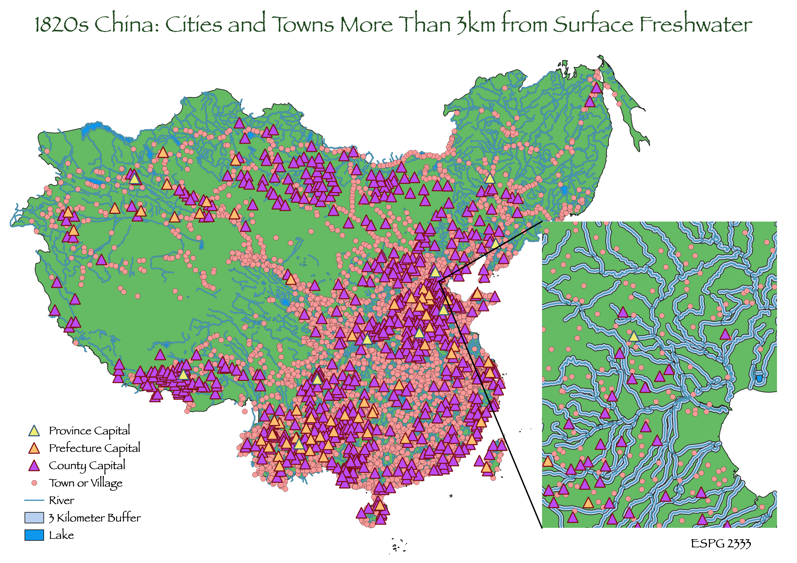

In a 2011 paper entitled "How Close Do We Live to Water? A Global Analysis of Population Distance to Freshwater Bodies," reserchers analyzed how far populations around the world live from suface bodies of freshwater and how this interacts with population density and climate. They found that over half of the world's population lives within 3 kilometers to a surface source of freshwater. Inspired by this information, I used data from China Historical Geographic Information System (CHGIS) project to answer the question, "How many villages, towns, and cities in 1820s China were located further than 3 kilometers away from a lake or river?"
To create the background for my map, I had to first fix the vector geometry of the 1820 province dataset because it had errors. I then used the union funciton to create a single set for the polygons I fixed and the already valid polygons. I then dissolved the provinces into a single polygon. Next I created 3 kilometer buffers around the lakes and the rivers in my dataset. Then, to find the towns, prefecture capitals, province capitals, and county capitals that were located within 3 kilometers of a river or lake I performed the intersect function for each set of points. Finally, I took the difference of the datasets of towns and cities within 3 kilometers of a river or lake from the complete datasets, which resulted in datasets of the towns and cities located further than 3 kilomerers away from a river or lake.
The paper I was inspired by was analyzing populations' distance to freshwater within the past 20 years and reached the conclusion that more than 53% of the global population lives within 3km of a suface body of freshwater. Of course, their analysis was done based on population numbers, while looked at the number of villages, towns, and cities, so I did not expect to find the same twrends in my analysis. I did find that while 55% of towns and villages were further than 3 kilometers away from a lake or river, only 42% of province capitals, 24% of prefecture capitals, and 41% of county capitals were further than 3 kilometers away from a lake or river.